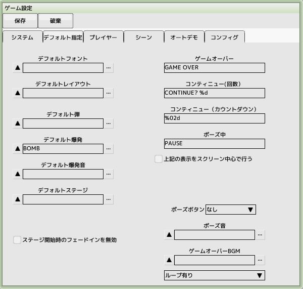

■元のページへ戻る
■元のページへ戻る
5.爆発を作成する
敵等が爆発するときのエフェクトを作成します
前回のチュートリアルで作成したプロジェクトファイルを開いておいてください
爆発スプライトの作成
スプライトを新規作成し、名前を'BOMB'とします
リソースフォルダからimg_bomb01.bmpを登録します
当たり判定は必要ありません
アニメーション編集タブへ切り替え、アニメーションを一つ作成します
ループにチェックが入っている場合はチェックを外します
この時のアニメ番号をパターン番号の代わりに指定するとアニメーションが再生されます
アニメフレームを11個追加し、パターン番号に1～11を、フレーム数に2を入力します
プレビューを再生してアニメーションを確認します
(ループ無しの設定でもループ再生されます)
爆発キャラクタの作成
種類に敵（空中物）を選択
パターン番号に-1を設定(負の数なのでアニメ番号になります)
スプライトとスクリプトを登録します
爆発スクリプトの作成
先ほど作成したスクリプトを編集します
タスク「0:メイン」に制御カテゴリの通過と消滅を配置します
通過の時間待ちの項目をフレーム数に切り替え、アニメーションの長さである22を入力します
これでアニメーションを再生しきった時点で消滅するようになります

デフォルトの爆発として登録する
作成したスプライト、キャラクタ、スクリプトを保存して閉じてください
ゲーム設定を開き、デフォルト指定タブをクリックします
その中にあるデフォルト爆発の...をクリックして先ほど作成したBOMBを登録します
テストプレイし、敵が爆発するか確認する
前回の敵作成と同様にENEMY-Aが出現するようにテストプレイし、ショットで敵を破壊します
爆発が表示されれば成功です
■ページ上部へ戻る